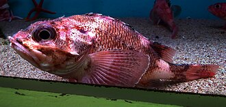

きちじ（喜知次）の漁獲量 都道府県ランキング
全5県の順位と、とれた量
きちじが日本でいちばん多くとれるのは北海道です。579 tで、全国（935 t）の62%を占めます。

| 順位 | 都道府県 | 漁獲量 | 全国に占める割合 |
|---|---|---|---|
| 1位 | 北海道 | 579 t | 62% |
| 2位 | 岩手県 | 205 t | 22% |
| 3位 | 宮城県 | 102 t | 11% |
| 4位 | 青森県 | 22 t | 2.4% |
| 5位 | 福島県 | 4 t | 0.4% |
きちじの漁獲量の推移（令和2年〜令和6年）
全国の漁獲量は、令和2年の805 tから令和6年の935 tへ、16%増えました。この間、1位はずっと北海道です。
| 年 | 全国 | 1位 | 2位 | 3位 |
|---|---|---|---|---|
| 令和6年 | 935 t | 北海道579 t | 岩手県205 t | 宮城県102 t |
| 令和5年 | 930 t | 北海道602 t | 岩手県151 t | 宮城県104 t |
| 令和4年 | 1,236 t | 北海道632 t | 宮城県350 t | 岩手県202 t |
| 令和3年 | 857 t | 北海道491 t | 岩手県178 t | 宮城県117 t |
| 令和2年 | 805 t | 北海道423 t | 岩手県169 t | 宮城県142 t |
この数字について
- 分類：鮋の仲間
- 全国の漁獲量：935 t
- この数字が表すもの：漁獲量（海でとった重さ。養殖は含みません）
- 調査：海面漁業生産統計調査（海面漁業） 令和6年
- 5県分を調査（調査していない県は順位に入りません）
きちじの漁獲量について、よくある質問
- きちじの漁獲量が日本一の都道府県はどこですか？
- 北海道です。海面漁業生産統計調査（海面漁業）（令和6年）で579 tでした。
- きちじの漁獲量ランキング2位・3位はどこですか？
- 2位は岩手県（205 t）、3位は宮城県（102 t）です。
- きちじの漁獲量ランキング4位・5位はどこですか？
- 4位は青森県（22 t）、5位は福島県（4 t）です。きちじの全5県の順位は上の表のとおりです。
- きちじの全国の漁獲量はどれくらいですか？
- 935 t（令和6年）です。